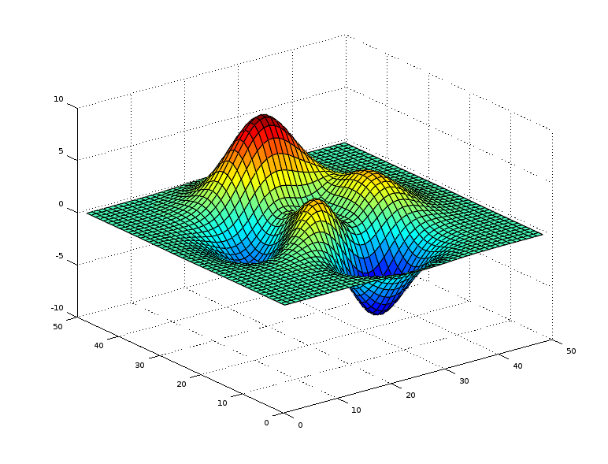
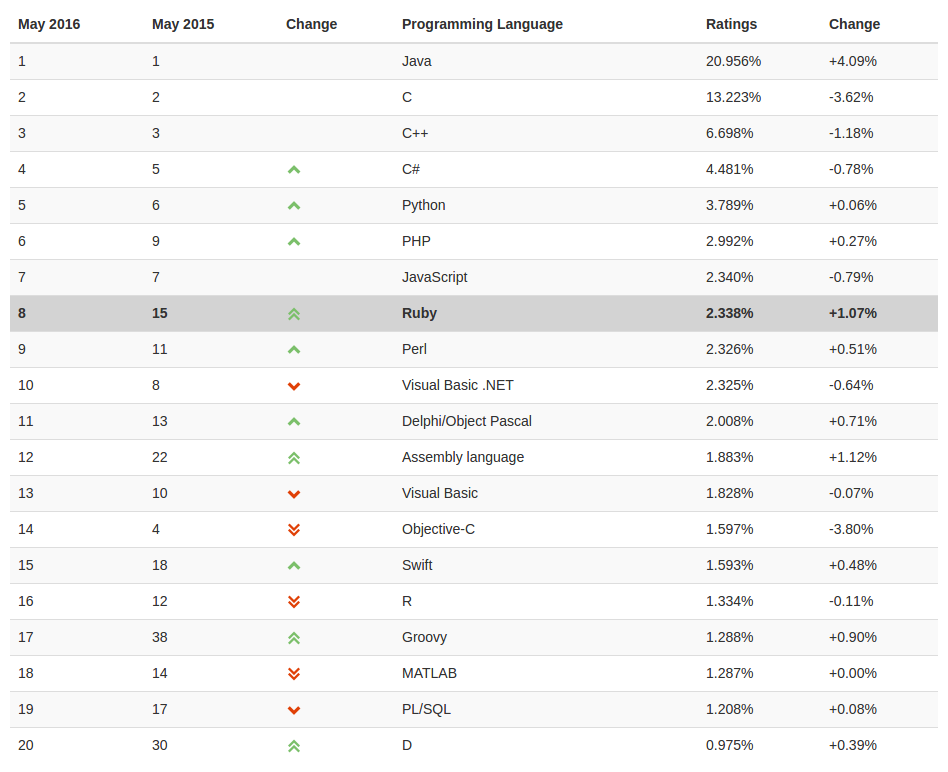
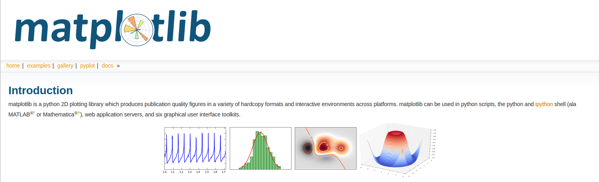
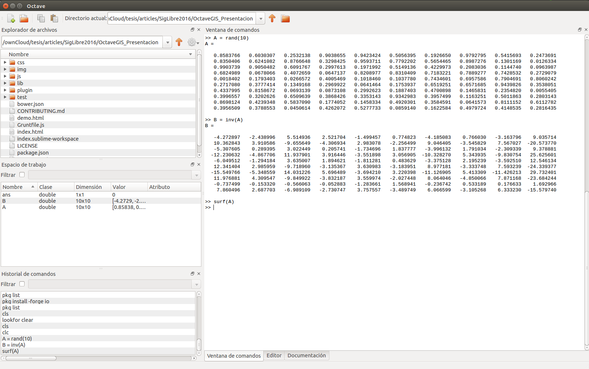
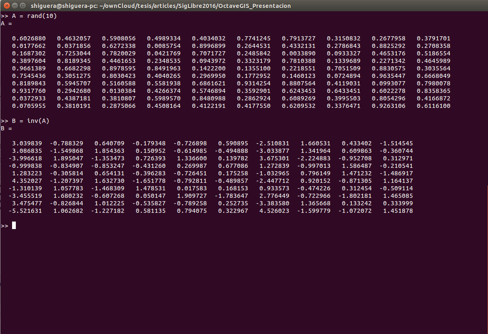
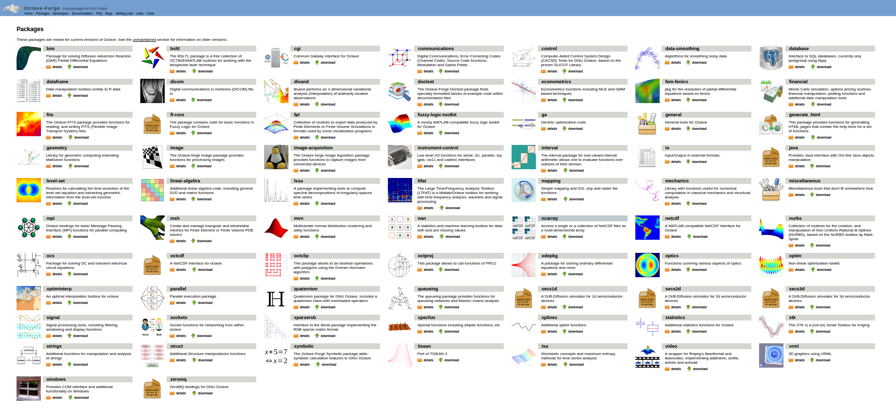
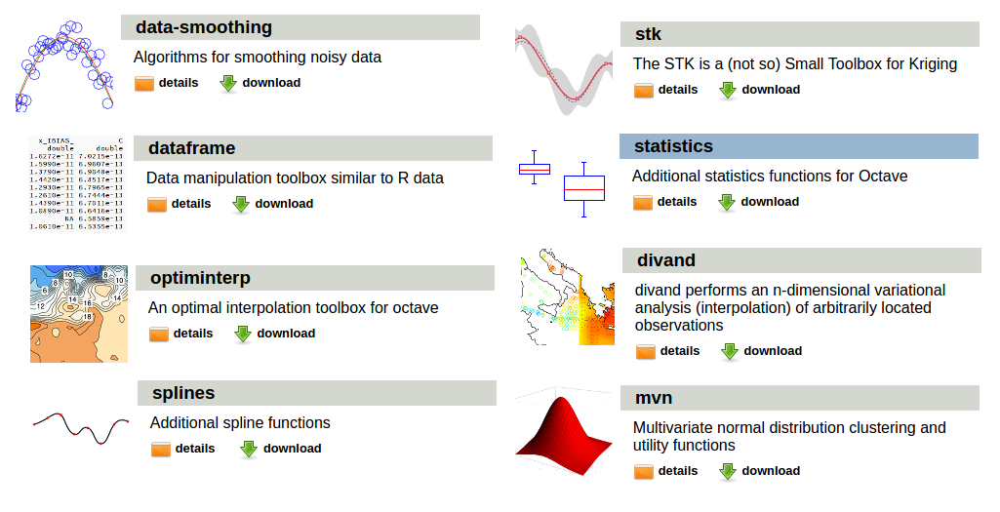
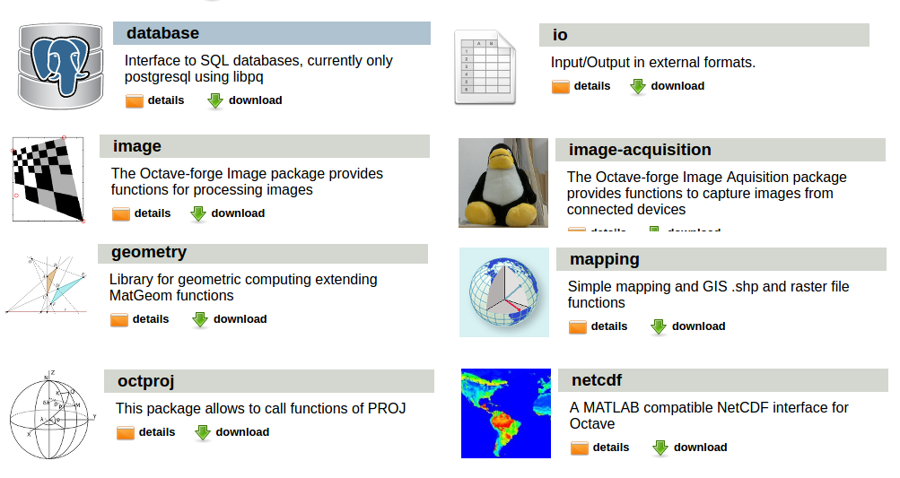

Octave
La supercalculadora GIS

Santiago Higuera

- @santiagohiguera
- Profe en @caminosupm
- Mi empresa es Mercatorlab
- Participo en:
- Escribo en:
Índice TIOBE Lenguajes más utilizados
'http://www.tiobe.com/tiobe_index?page=index' Lenguajes para análisis numérico
- MATLAB - Octave
- Python + NumPy + SciPy
- R
- Julia
- Fortran
matplotlib
Librería python para gráficos que emula el interface Matlab-Octave
Speed tests
- MATLAB: El más rápido
- Octave y Python: similares, buenas alternativas a MATLAB
Interconexión con otros lenguajes
- Python Oct2Py: Acceder a Octave desde Python
- Java joPAS: Acceder a Octave desde Java
- Java package: Acceder a clases java desde Octave
- Oct-files: Compilar y usar C++ desde Octave
Octave IDE
Octave CONSOLE
Octave packages: forge
http://octave.sourceforge.net/packages.php
Octave packages: destacados (I)

Octave packages: destacados (II)

Octave packages: instalación
pkg install -forge -auto package_name
io package
Input/Output in external formats.
- object2json
- CSV file functions
- XLS and ODS I/O
- DBF I/O
- XML I/O
geometry package
Geometric computing to create, transform, manipulate and display geometric primitives.
- 2D
- Points, Vectors, Angles, Rays, Lines, Polylines, Boxes
- Circles, Ellipses, CubicBezier, Polygons, Polynomial
- Transformations
- 3D
- Points, Lines, Edges, Planes, Meshes
- Espheres, Boxes, Polygons
- Transformations
database package
Interface to SQL databases, currently only postgresql using libpq.
http://octave.sourceforge.net/database/overview.htmlimage package
Functions for feature extraction, image statistics, spatial and geometric transformations, morphological operations, linear filtering, ...
- Analysis, Statistics, Arithmetics
- Black and White image functions
- Colour maps and Colour controls
- Display, Enhancement and Restoration
- Filtering, Transforms and Spatial transformations
- Morphological, Region based and Block Processing Operations
- Read/ Write and Type conversions
octproj package
This package allows to call functions of PROJ.4 library for cartographic projections transformations.
http://octave.sourceforge.net/octproj/overview.htmlmapping package
Simple mapping and GIS .shp and raster file functions.
- Shape files
- Raster files
- Paths in curves
- Lengths and angles http://octave.sourceforge.net/mapping/overview.html
THE END
BY Santiago Higuera

Esta obra está bajo una Licencia
Creative Commons Atribución-NoComercial-CompartirIgual
3.0 Unported.